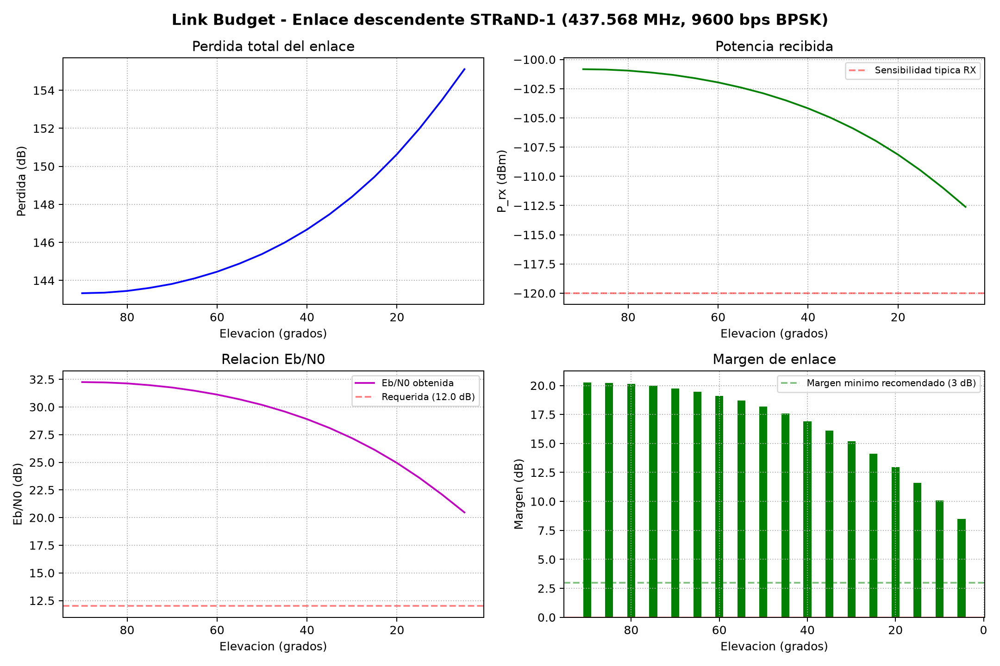
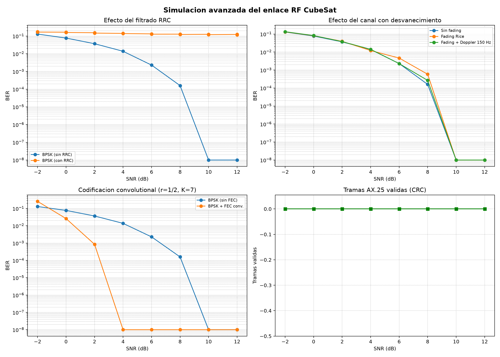
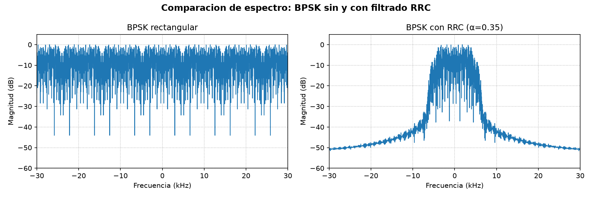
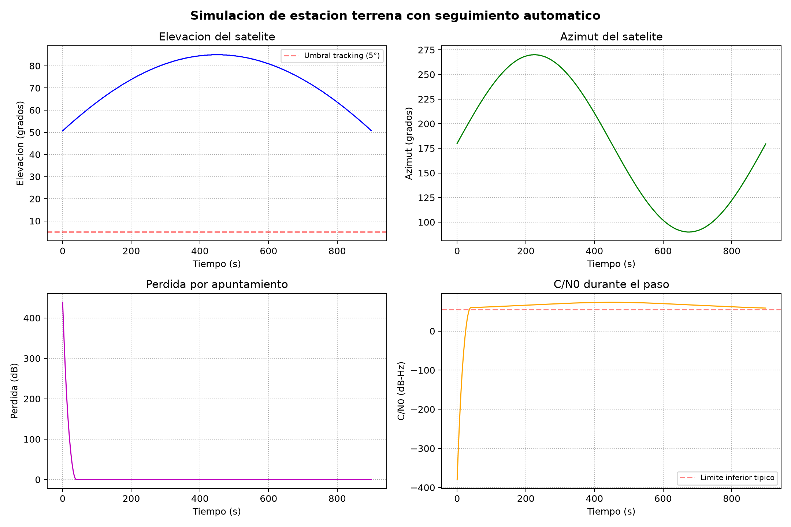
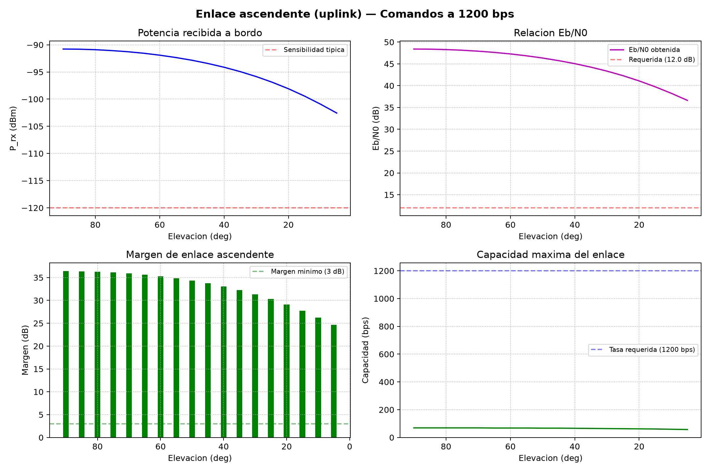

Proyecto completo • Julio 2026
Caracterización del subsistema de comunicaciones de un CubeSat
Simulación de señales de radiofrecuencia para el análisis de modulación BPSK/FSK, cálculo de link budget, flujogramas GNU Radio y comparación con 7 CubeSats reales, usando telemetría de STRaND-1 como referencia.
Modelo de simulación RF
El modelo implementa una cadena baseband equivalente con datos reales: frames de telemetría → bytes → bits → modulación BPSK/FSK → canal AWGN → demodulación → BER. Se exportan archivos IQ para GNU Radio y resultados numéricos en CSV/JSON.
SatNOGS API
Frames telemetría
Bytes a bits
BPSK / FSK
Canal AWGN
BER + IQ
Hallazgos principales
BER cero desde 2 dB SNR. ~27 kHz de ancho de banda a -20 dB.
Más robustoBER cero desde 8 dB SNR. ~12 kHz de ancho de banda a -20 dB.
Menor ancho de bandaMargen mínimo 9.1 dB a 5° elevación. Supera los 3–6 dB recomendados.
Enlace viable7 CubeSats reales evaluados. Alta concordancia en frecuencia, modulación, tasa, potencia y margen.
6/7 parámetrosFlujogramas GNU Radio
Dos flujogramas diseñados para GNU Radio 3.10 que permiten visualizar y demodular las señales IQ generadas por la simulación Python.
simulacion_visualizar_iq.grc
File Source + AWGN + Time/Freq/Constellation sinks. Control interactivo de ruido.
simulacion_cadena_completa.grc
Cadena BPSK: bytes → unpack → chunks_to_symbols → AWGN → integrate → slicer → sinks.
Los archivos .grc se abren con gnuradio-companion. Requieren GNU Radio 3.10.
Link budget descendente UHF
Cálculo del margen de enlace para STRaND-1 a 437.568 MHz (9600 bps BPSK) usando parámetros típicos de CubeSat 1U y estación terrena con Yagi de 15 dBi. Resultado: margen de 9.1 dB a 5° de elevación, aumentando a 19.3 dB en cenit.

Simulación avanzada (RRC + FEC + fading + AX.25)
El modelo avanzado incorpora filtrado conformador RRC (α=0.35) que reduce el ancho de banda de ~77 kHz a ~12 kHz, codificación convolutional (r=1/2, K=7) que alcanza BER cero desde 4 dB SNR, desvanecimiento Rice con perfil Jakes, y tramas AX.25 completas con CRC-16-CCITT.


Análisis: corrección de la compensación Doppler
Se detectó que todas las configuraciones con desplazamiento Doppler orbital
colapsaban a BER ≈ 0.5 (piso de ruido) en todo el barrido de SNR, sin mejorar con
mayor SNR. Causa raíz: el receptor aplicaba el corrimiento Doppler al canal pero no
lo revertía antes de demodular; en los 1.96 s que dura la trama, la fase acumulada
llega a girar hasta ~293 ciclos completos (Doppler máximo, 150 Hz), dejando al detector
coherente sin referencia de fase válida. Se implementó una etapa de compensación
(compensate_doppler) que revierte la fase Doppler conocida antes de
demodular, equivalente a un lazo de seguimiento de portadora perfectamente enclavado.
Tras la corrección, las curvas BER con Doppler siguen de cerca a las curvas sin Doppler
(BPSK a 0 dB SNR: 0.494 → 0.081, frente a 0.077 sin Doppler).
Estación terrena + enlace ascendente
Modelo de estación terrena en Bogotá con seguimiento automático de antena (Yagi 15 dBi, velocidad 5°/s az, 3°/s el). C/N0 promedio: 60.4 dB-Hz durante el paso. Enlace ascendente a 435 MHz para comandos a 1200 bps con margen de 24.6 dB (5°) a 36.4 dB (90°) usando 10W de potencia TX.

